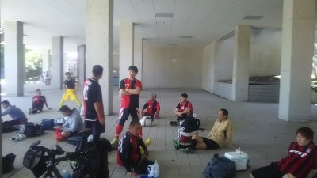

今日もいいお天気でしたね。今は雨降っているけど。
今日はGWの最後の日にもかかわらず合計で１７名の参加がありました。
いつもどおり、鳥かごでアップしてミニゲしましたが、個人的にはまだ特に左足の不安と腰が重かったのと、後は昨日ハイキングで１５Km歩いたダメージがあって、結構最後の方はさぼってました（笑）
今日はなんと３名の人がビブを忘れるということがありました。ほんと道具をきちんと持参するのも社会人として当たり前のことですので、今後は無いようにお願いします。
今日も笑いありのいいプレーありので楽しい一日でした。まえちゃんやタクちゃんがドリブルからそのままシュートまで持って行ったり、なかやんが奇声を発しながらまっとんを振り切ってゴール前まで攻めてったり、ゆっきーが前回と同じようなハンドをしらばくれようとしたり、もりちゃんがボール持つと味方の時はまえちゃんが「早くパス出して」と優しく、敵の時は「持たせとけ」になったり、トシキ、僕、スガちゃんの連続攻撃でスガちゃんが最後、強烈なシュートを食らわしたり、トクさんが重戦車のように暴れまくったり、まんちゃんが何時もとは違いドリブラーしようとして、スケさんとかに阻まれて悔しがったり、よっしゃんがサイドを駆け上がっていいクロスしたり、ごろうが絶叫しながら攻め込んだりとかいっぱいありましたが、一番のプレーはぶっちのピンポイントクロスにトシキがヘディングでゴールにぶち込んだ一撃だったかな。先週はポストにコーンとかやったのに、「先週に見せて欲しかったなあ」とヤジが飛んでましたね。きっとクロスを上げた人が変わったからかもですね（笑）
まあ、そんな一日でした。
今週末は土曜日が試合です。まだ人数が少ないので参加出来そうな方は早めに出席にお願いします（足りなかったら早めに主催者さんに報告しないと駄目なので）、あと翌日の日曜日も人数によっては中止も考えないといけないので早めに出欠登録確定をお願いします。
本日参加された皆さん、おつかれさまでした。
日曜日は、みなさまお疲れ様でした。約2年ぶりに急遽参加させていただきました。ありがとうごさいました。年も年ですし、久しぶり過ぎて何もできませんでした。なにより、次の日の体の痛いこと、痛いこと、サッカーって、こんなに体に負担がかかるんですね。なにもしてないのに(^-^;)今後ともよろしくお願いします。
レオン戦、お疲れ様でした。
結果も良かったし、満足できるプレーが多くできてよかったです。
まっさんから受けたボールはギリギリ追いついて、ヒールで、むらっちに落として、クロス入れてくれてました。そのあとは覚えてないですが・・・。
ＰＫもゲットできたし、まえちゃんとのワンツーから、左足を振りぬいて右隅に突き刺したのは、本当に気持ちが良かったです。僕の中で今年1番のゴールでした。まえちゃん、毎度のアシストありがとうございます。リターンパスもらってから妙に冷静で、うまくボールコントロールできたし、シュートも完璧すぎるぐらいハマりました。これがゾーンというヤツか！・・・まぐれです。
先日の試合参加された皆様お疲れ様でした。
また対戦相手のレオンfc様ありがとうございました。
暑い中、運動量も多く(年齢のわりには)双方共に守備が固く1点を争う良い内容のゲームだったと思います。
攻撃のバリエーションの多さで僅かにウチが上回っていたようです。
何よりまっさん復帰戦無事に終えてほっとしました。
我慢したかいがありましたね。
徐々にコンディション上げて下さい。
逆にタカさん心配です。無理せずしっかり治して真夏の試合までに間に合わせて下さい(笑)
ヨッシーはブランク感じさせないくらい元気でしたよ。また今度宜しくお願いします。
ほんとやってて楽しいゲームだったので当日は筋肉痛でお腹一杯でしたが翌日はまたゲームやりたくなりました。
これから暑くなるので省エネサッカーで頑張ります。
先日、試合に参加された方お疲れ様でした！
ゲーム内容も結果も良かったと思います。
天気も良く気持ちよくサッカーが出来ました。いつもありがとうございます。
まっさんの書き込みでありましたようにやらかしてしまいました…
タクちゃんからのクロス、コーナー、ほっしゃんからのコーナー、みんなで繋いでもらったパス…決めきれず、すいませんでした。
それだけではなく要所要所でミス、反省の多い一本でした。
自由にやらさせてもらってるのに迷惑かけてすいませんでした。以後気をつけます??
むらっちからのナイスパス決めれて良かったです！
いつも楽しくサッカーできて最高です！
次の参加できる日が待ち遠しいです！

今日はいいお天気でしたね～、深北緑地もBBQとかの家族連れとかでえらい人がいっぱいでしたね。
そんななか、うちのチームは合計で１９名の参加がありました。皆さんGW暇なん？（笑）、でもいっぱい参加してくれて嬉しく思います。特に当日急遽参加のよっしーは２年ぶりくらいに会ったけど変わってないなあ（笑）
今日はレオンさんとの練習試合でした。対戦して頂いてありがとうございました。ただ、前回に混成チームで対戦した時に「フルレオンでしようや」って言ってた昔のチーム仲間がまさかの欠席、今後会ったらタイキックくらわしちゃる。
まあ、話は変わりますが個人的には特別な日になりました。去年の１０月に肉離れしてから左右で計五か所連続でなって、ずっと治療しながら無理せずにしてて、今日が半年ぶりの試合でした。まだトップスピードでは走れなかったし、ドリブルで切り返しとかは不安で出来なかったけど、それでも８割くらいは出来てたかな。終わってからも特にツッパリ感とかも無かったので一つの峠は越したのかなって嬉しかったです。まあ、油断大敵なんだけどね。代わりにタカさんが肉離れになったのが心配です。きちんと処置して出来れば病院行って早く治してくださいね。あとたっちゃんも気を付けるようにね。
さていつも通り、試合ごとのハイライトシーンをカキコしていきたいと思います。
２０分を４本でした。
１本目は２トップの右側？のテラさん中心に組み立ててましたね。左からドリブルしてミドルシュートとかもあったし、トシキやなかやんでのパス回しであと一歩惜しい面もありました。
テラさん御得意のオフギリギリでの裏への飛び出しは相手のラインが凄く高かったのもあって難しかったですね。
ただ審判してて感じたけど中盤の真ん中が全く居なくて攻撃が単調になってた感じもありました。
あとは、キーパーへのバックパスで相手のコーナーより少し前からのフリーキックでのボールをまんちゃんが飛び出してジャンピングキャッチはお見事でした。
ぶっちがデフェンスラインをコントロールしてくれてました。
双方ともに得点なしです。
２本目、久々参加のよっしーが絶対に前に行くと思ってたら、センターバックって・・そのせいで僕は右サイドバックに追いやられた（涙）
まあ、いきなりよっしー劇場してたなあ、クリアしようとして空振りしたりとかあったけど、頑張ってたと思うよ。まあ、隣でヤスさんフォローしててくれてたし、ボランチのゆっきーもフォローしてくれてたね。
んで、得点はうちが決めました。
右サイドバックでパスコースわざと空けといたら、案の定ボール出してきたからそれを途中でカット。左サイドバックのタクちゃんが逆サイドのハーフラインあたりに居たからボール蹴って、タクちゃんがその後どうしたか覚えてないや・・・タクちゃん解説よろしく。まあ、まあ、何だかんだで右サイドから上がっていた今日初試合のカズに渡って、カズがゴールラインあたりでキープしながら相手とかの位置を見て、中央へマイナスでゴロの優しいパス、それを中央から走り込んできたゆっきーが冷静にコースをついてゴールでした。
カズはいい動きしてたと思います。初試合の感想をぜひお願いします。ついでにジャンプゆっきーも得点の感想を面白くカキコするように。もうレボリューションの画像はいらんよ（笑）
後はタクちゃんの足にはびっくり、僕が右サイドでボール持ってタクちゃんが逆サイドを上がってきているの見て、ボール蹴ったら会心の一撃気味で、ほぼコーナーの辺りだったのを追いつくんだもんなあ。僕は怪我が治って体重落として、タクちゃんの速さについて行けるようになるのを目標にしてます。
３本目はトシキが４連発でクールポコったのと、タクちゃんが「パス出すポイント変えようかな」って毒はいたのと、良くわからんうちに何か点決められて今日もクリーンシート出来なかったのと、タクちゃんがドリしてファールになってPK決めて追いついたとかあるけど、やっぱり一番はよっしーの笑撃のプレイかな、フリーキックで速攻、前線を見つつ華麗にキック、３M先のわだっちのケツ直撃（笑）、動画にはわだっちが見切れててケツに当たったいい音だけ（笑）
あと、タクちゃんのPK蹴る前のむらっちがなかやんって呼んで、その後のなかやんの行動が謎（笑）
久々の参加で４本目のライマンも含めて、いい意味で天然感満載のよっしーらしさが懐かしかったです。ぜひ久々の参加と試合の感想をよろしくお願いします。
４本目は、正直、どんだけーー（BY IKKO）って言うくらい足が不安の中、縦にスプリントしたかなあ、でもボールが来なくて全部おとりに使われた（涙）
２得点ありました、いつもながらのまえちゃんの見事なタイミングのスルーパスを受けたタクちゃんがドリして、最後は体制を崩しながら左足のジャンピングボレーみたいな感じで強烈なミドルをたたきこんでくれました。
もう一点はむらっちからトシキにぴゅーんてボールでて、トシキがぽよーんってボール蹴ってゴールになったわ（笑）、あれを外さないとやっぱりお笑いの世界では生きて行けないなあ（笑）
まあ、そんな感じでした。今日は活動報告。１試合目が審判、２試合目と４試合目がゲーム出て、３試合目は動画取ってたので、やっぱり怪我して見学しててメモしてるよりはかなり内容が少なくなっちゃうなあ。そろそろ記憶力が・・・（涙）
本日、参加された皆さんお疲れちゃん。
画像は復活した影のエースとそのしもべのあくどいことを打ちあわせている様子です（笑）
いいお天気で風もあってええ感じでしたね。
今日は体験参加さんや遅刻、早退、見学合わせて１７名の参加がありました。練習で１５名以上集まるチームはなかなか無いとか聞いたことがありますが、ほんとうちのメンバーは時間作って、練習を楽しみに来てくれているので嬉しく思います。
いつもどおり鳥かごしてからミニゲしましたが、なかやんがまえちゃんやゆっきーにいじられたり、反対にやり返したり、ゆっきーがハンドをしらばくれったり、タクちゃん、トシキとかのいいプレーがあったり、ごろうが絶叫したりとか、もりちゃんがボールを延々と持たされてカラータイマーなりっぱなしだったりとか楽しい時間を過ごせたと思います。
たっちゃんの足は大丈夫かな？僕と同じでくせになってる可能性もあるので、気持ちはすごーくわかるけど楽観的に考えずにきちんと治してからまた参加してくださいね。
個人的にはかなり久々にボールを蹴りました。もちろんダッシュとか切り返しとかあまりせず、プレーも全力は無理で５割程度でしたし、足が不安で気になってプレーもボロボロでしたが、それでも最後まで再発しなくて出来たことは良かったかなって思います。でも腰を少し痛めたのは悲しかったなあ（涙）
やっぱり違和感はどうしても出るので、それを気にしすぎても駄目だし、全く気にせずに全力でするのは怖いし、当面様子見ながらになりそうなのでご理解をお願いします。
まあ、次再発したら、「僕がチーム引き継いでしますんで大丈夫っすよ」とトシキが言ってくれたので、安心してます（笑）
何度かタクちゃんと１対１になる場面があったけど、ワクワク感と足への不安感が混ざり合って中途半端やったなあ（涙）
まあ、そんな感じで一日が過ぎました。来週試合で、１本でも出れたらいいんだけどなあ・・・。
本日参加されたみなさん、お疲れさまでした。
いいお天気だなあ、風もあったし。周りの家族連れとかも居なくていい環境でした。そんななか僕は怪我で大事を取って見学で早めに帰ってきましたが、ヤスさんに「グランド準備だけで来てごくろうさん」と毒を吐かれました。（涙）、今日の朝に参加に出欠登録確定にすんな（怒）
まあ、そんな感じで僕以外に１６名の参加がありました。最初はバイクの暴走族がえげつないスピードで登場から始まって、後は鳥かごでUPしてそれからはミニゲをしました。
最初はコスいんのハンド疑惑から始まって、えげつないコーナー蹴ってたなあ。
後は全体的に楽しそうな感じでしてましたね。
その中でもりちゃんとテラさんの珍プレーが２連発あって、テラさんが匍匐前進を必死にしてた。（笑）どうか僕が帰ってから３連発になってませんように。
あとトクさんが肉離れで負傷したのが心配です、早くRICE処置して酷くならないように願ってます。
僕が帰ってからなんかおもろいことあったら、またどなたかカキコお願いします。
あ、今日カキさんの家で郷ひろみが出るドラマ撮影があったらしくて、カキさんも主要メンバーで出ているらしいので、ぜひ放送日を楽しみにしておきましょう（笑）
参加されたみなさん、お疲れ様でした。
来週は僕は欠席になりますので、参加の方また道具管理や進行等よろしくお願い致します。
土曜日の試合、お疲れ様でした。何か土曜日は新鮮でしたね。
今回も内容が濃く、結果にも満足できるプレーができてよかったです。
何本かオフサイドに引っかかって得点チャンスを逃したのが悔しかったです。ぶっちからの浮きスルーをダイレクトでループシュートはオフになったけど、動き出しからフィニッシュまでイメージ通りだったので気持ち良かったです。ぶっちのアシスト無くしてすいません。（汗）動画では絶妙にフレームアウトしていて見れなかったですが、オフにかからないタイミングでの飛び出しが今後の課題です。
それと、コーナーキックをまともに蹴れるようになる事も課題ですね（笑）
最近、調子がすこぶる良くて、いつか怪我しそうな気がしますが、皆さんからの決めてくれ！と言わんばかりの熱いパスを受けてゴールするのが何よりの快感です。いつもチャンスボールを下さってありがとうございます！
最後の試合で、まえちゃんからのあのスルーパスはドンピシャすぎましたね。あの高い位置で一瞬の溜めを作ってくれたから、相手ＤＦ陣全員がボールウォッチャーになってましたね。飛び出して受けたら完全ドフリーやったんで外したら消されるかもしれないと内心ヒヤヒヤしながら、インサイドで確実に行きました。（笑）ナイスパスありがとうございました。
先日の試合皆様お疲れ様でした！
試合感想前に、まっさんから活動報告内で紅白戦の解説依頼していただいていたのを見落としていました(笑)すみません。
試合に関してはいい天気で気持ちよかったですね。
私はエガリテ入部後初めての複数チームによる試合だったのですごく楽しかったです。
試合は均衡したチームの試合だったので白熱しましたね。攻撃の厚みを持たすため、４－４－２を試したりしながら色々と収穫もあったのではないでしょうか。
私の印象に残ったプレーは最後の試合のまえちゃんからタクちゃんへのスルーパスからの得点でした。
敵も人数をかけてプレスに来ていましたが、あれだけまえちゃんに引き付けられると人数は無力化しちゃいますね。綺麗な得点でした。
もう一つ全体を通して印象に残ったのはエガリテの守備！
ラインを下げすぎず、コンパクトに守って球際も強い！
特にセンターバックのヤスさんとゆっきーの安定感は抜群でしたね。また、わだっちのポジショニングとボール奪取からのパスの展開もいい攻撃の起点になっているなぁと感じました。
ディフェンスを４枚にする場合は一人の野生児を除いて攻撃参加が少ないのが課題ですかね。
本当に皆さん個性を活かしたいいチームだなと思いました。
そして、まっさん。カメラマンいつもありがとうございます！個人的にアップしていただいた動画見て楽しんでいます！
早く怪我を完治させてピッチでボール蹴りましょう(^^)